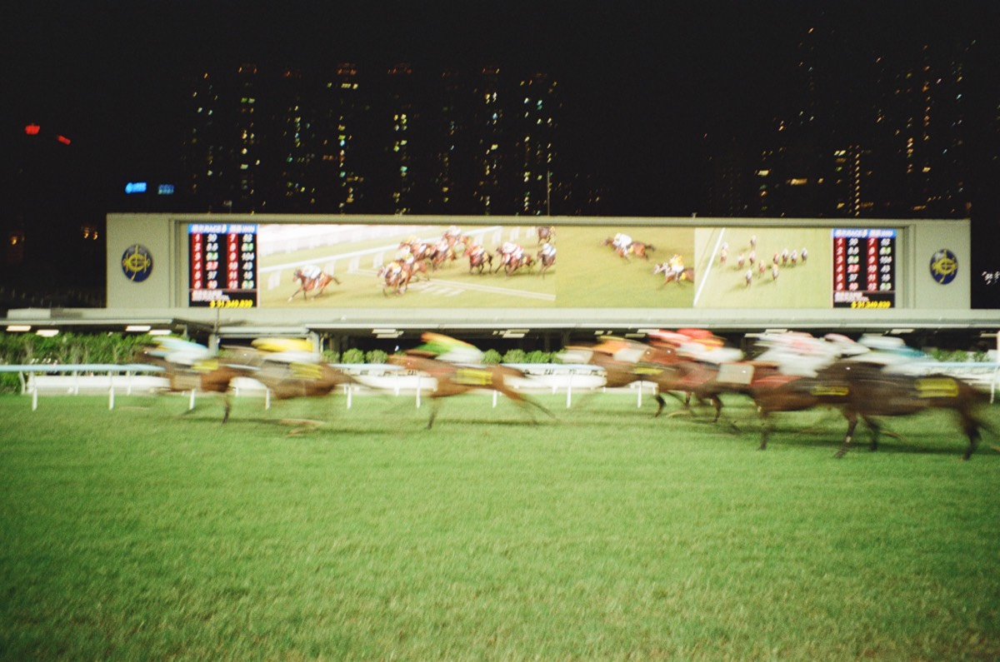
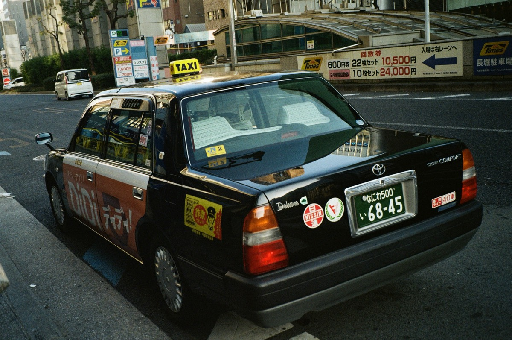
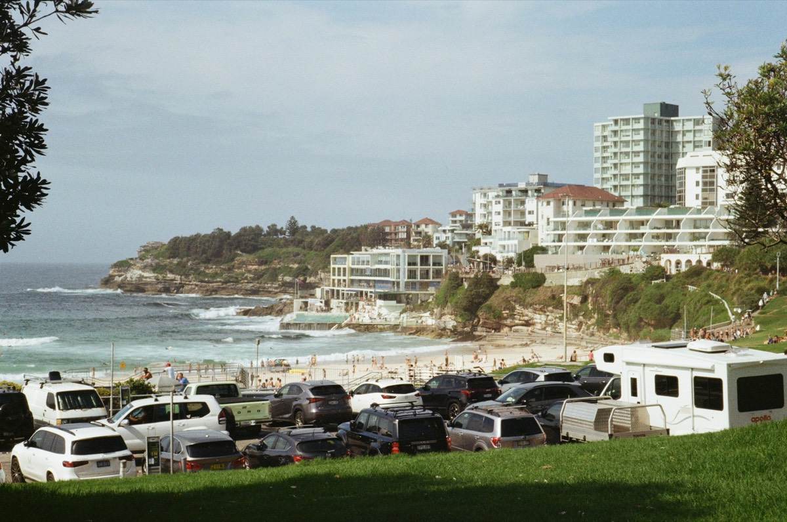

Hong KongView →
TokyoView →Wanderlust
Market stalls & film rolls
SeoulView →
Mount KinabaluView →
Golden hour
Jet lag, again

SydneyView →Somewhere, elsewhere
Homesick
“I didn’t come home with souvenirs — I came home with a different way of seeing light.”